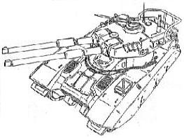

| Type 61 |
|
|  | |
General and Technical Data |
|
|
Unit type: main battle tank Armament: 2 x 150mm cannon; 12.7mm machinegun; 7.62mm machinegun; 2 x 4-tube grenade launcher |
|
| Technical and Historical Notes | |
|
The Earth Federation's standard main battle tank has evolved slightly in the century and a half since the basic design of an AFV was standardized. The Type 61 is a relatively bread-and-butter tank, its only noticeable improvement over twentieth-century designs are its dual main cannons and improved fuel efficiency.
Though it packs a substantial punch, a tank is still merely a tank (unless it's the monstrous Admiral A-1) when compared to mobile suits. Though Type 61s have scored some kills against Zeon mobile suits during the Earth Invasion, it's still predominantly a mobile suit war. And as the Type 61 has no real gimmick like the Zeon's Magella Attack Tank and its flying turret, it has been relegated primarily to a fire support role. |
 RPG quick stats sheet
RPG quick stats sheet